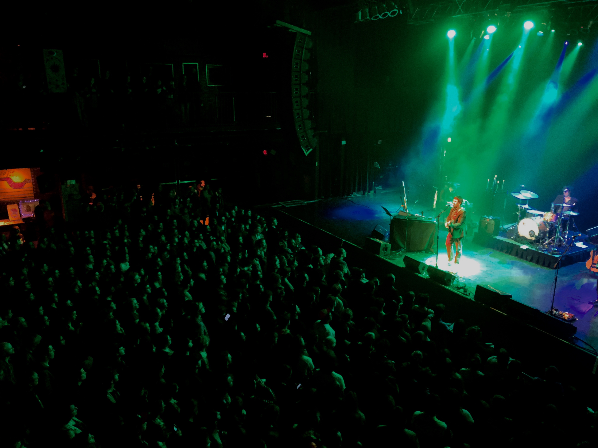
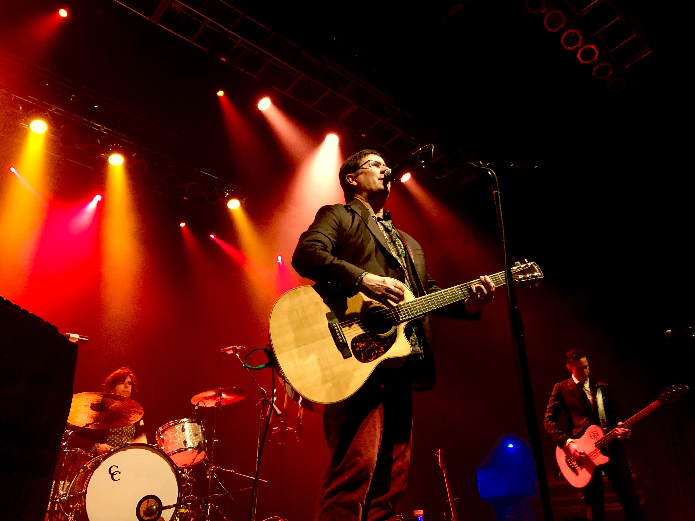
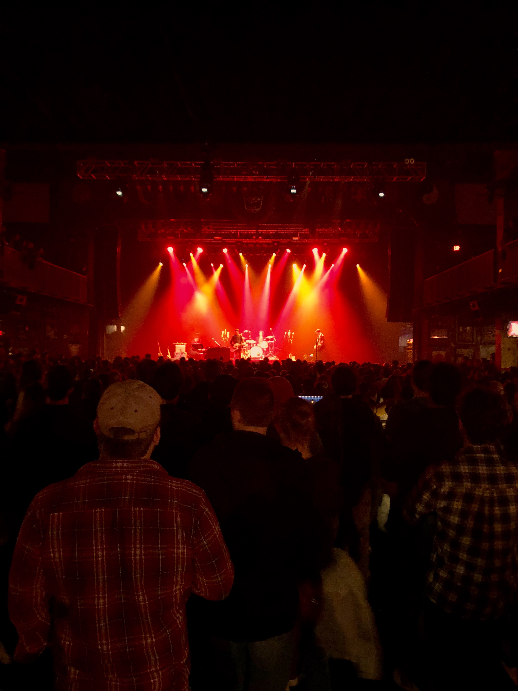

If you listen to their tracks on Spotify, lyrics aside, the Mountain Goats (historically) sound almost exactly like a mixture of those names on the “related artists” list; Neutral Milk Hotel, The Thermals, The Magnetic Fields, Okkervil River, etc. Their sound is cohesive, the music comforting in a way NMH or Beirut are, and not to get personal but they were all I listened to freshman year during my first big depressive episode. The band is, to put it simply, relatable and easy to enjoy- even if and maybe because sometimes it’s all blended together in a folk-jazz-indie kombucha mix.
But their tour's House of Blues gig last Monday night (led by front man Darnielle and opened by Mothers) absolutely shattered any expectations I had- and only, somehow, in ways that had me wondering why I don’t listen more.
*****
Mothers, a(nother) folk indie/rock group out of Georgia opened the gig to an already packed house, who while enthusiastic were - bummer for Mothers - also pretty clearly impatient. Kristine Leschper (Mothers' lead singer, though she also plays guitar) had a great, somehow familiar, voice for the and their vibe, the latter of which best exemplified by moving shots projected on HoB’s back curtain; a mix of the last California desert-themed music video you saw and an undergrad art installation. (The best part was the texture from the curtain.) But while her voice was promising, the tracks were largely rhythm-driven, and though Mothers started out with promise – at least B+ jam band grade – the tempo control was sometimes out of sync and frenetic in a jarring way. On the other hand, some moments worked really well towards the end of the set, though my impression likely had something to do with contrast.
To be clear, none of this is to say that individually speaking Mothers’ members are not good at what they do! Actually, Matthew Anderegg (their drummer) crushed it several times. The two last songs of their set especially saw him take a control, which only made me wonder why he wasn’t front and center more. But as a group the chemistry was (i) sometimes off, (ii) sometimes straight up dysfunctional, and (iii) only on occasion worthy of the potential they clearly have.
Last thing before the main event (See? You’re antsy too): Generally, I’m loathe in a gig review to comment on a set’s technical elements, since most times that’s the purview of the venue and not the band. That said, since it was such a glaring part of my experience of Mothers, I have to say that some of the between-song transitions were spectacularly awkward. And when at the end of the gig the lights went on, and Leschper, Anderegg, and the others (Drew Kirby and Chris Goggins) started cleaning up their own stuff, the move struck me as inelegantly sophomoric. Especially for the House of Blues.
tl;dr, give them a listen, but don’t rush to see Mothers live.
*****

Inasmuch as they informed the crowd’s vibe, and ranged from spectacularly awkward to blissfully cool, tbh transitions constituted an enormous element of Monday’s gig and its vibe. Luckily, the transition from Mothers to the Mountain Goats, when the latter got into their set, was far to the “blissfully cool” end of my spectrum.
Without putting down Mothers, I’d say it like this: where the opening act was people playing music, the Mountain Goats were musicians playing a Show, capital S.
That said, my last comment goes primarily for when the group was onstage together, since there were two (not bad, but definitely meh) moments that did pretty much nothing for them or the Show. The first was the pre-opening, set before the Mountain Goats came on to a blackout stage with two candelabras (Phantom of the Opera style), and a Vivaldi Sonata[1], lilting over a crowd of (vocally) confused fans. As a lapsed classical violinist, Vivaldi is always a pleasure. As a concert-goer and critic, it was unnecessary, since the first piece of the set (The Grey King and the Silver Flame Attunement, from their new album Goths) would’ve served the same chill purpose – it’s one of their slower, jazzier tunes – but its refrain “And I’m hardcore, but I’m not that hardcore” then almost felt like it was poking fun at the distinctly not hardcore[2] pre-opening bit.
But they charged on, and the transition from first to second song (Cotton, one of my personal faves) gave a hint to the prodigious display of musicianship in store – Darnielle and Matt Douglas (Douglas is by far the most musically talented of the bunch) both changed instruments – and the switch from jazzy with The Grey King to indie folk pop with Cotton was seamless, and exciting to watch. The second awkward moment was Darnielle’s solo set. As a lead singer he’s unlikely, and hilarious – think bare feet and a beer by the mic – but with the Mountain Goats on stage he could not be more charismatic. Alone, one the other hand, he has nobody to riff off of (he tried, tbf, with someone in the audience) and in ways the few songs felt less like a show than a recital.
But the post-solo set (starting with Snow Crush Killing Song, an awesome, jazzy song from their 1995 album Sweden) began with the best transition of all (maybe because it was a relief after the solo set to hear them all back together), and they continued to jam out for a boundlessly enthusiastic crowd another six more songs, ending in Against Pollution (another favorite) before they were called back for two (count em) encore sets.
The new MG album “Goths,” which they're promoting with the tour, is full of a consistent and varied energy. Check out Rain in Soho, to hear them pull off the impossible with some hardcore folk, and Paid in Cocaine for a jazzy jam I've had on repeats at kickbacks since first listen. There are more jazz/pop elements than I’ve ever heard from the Mountain Goats before, but they stick otherwise to the subversive, genius lyricism and high-skill-without-trying-too-hard cohesion that brought em fame (and you can definitely see why when their track record's so long, and so damn good.) I've been listening to the Mountain Goats for years now, and the whole show (minus those few nit-pickable moments) transformed how I hear their digital music by imbuing it with the echo of an unreal performance energy. That energy, I think, has only just now truly come out on LP with Goths, and is one on a list of reasons I'd recommend it. Otherwise, grab tix as soon as they're near you to transform listening.
tl;dr Their sticker is now on my computer. Listen to Goths, then get tickets to a live show ASAP.

[1] for 2 Violins & Viola in Eb Major, RV 130
[2] I want to make it clear that classical music can be very hardcore. This sample was not.